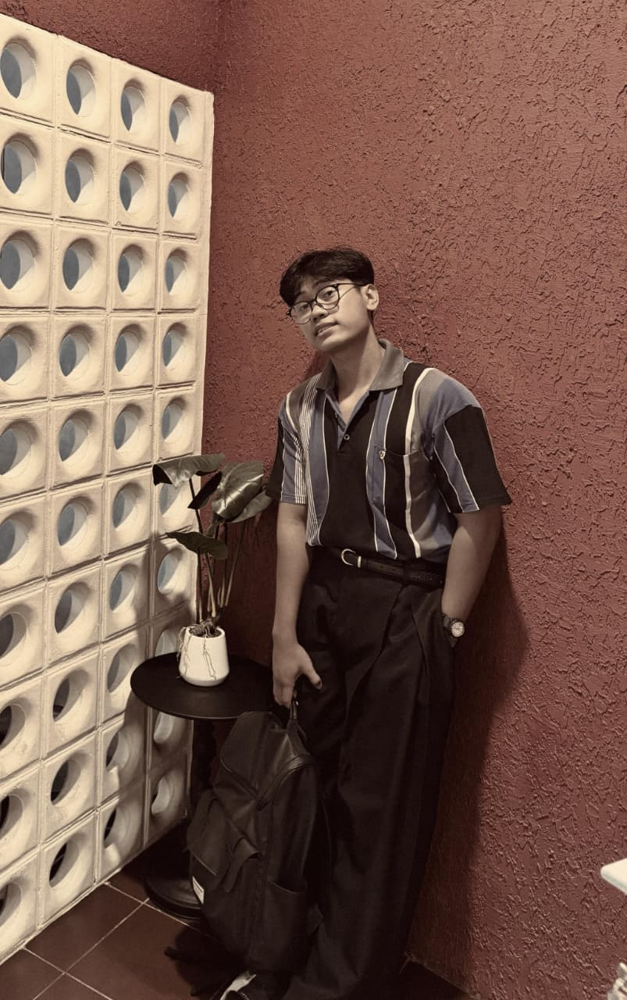
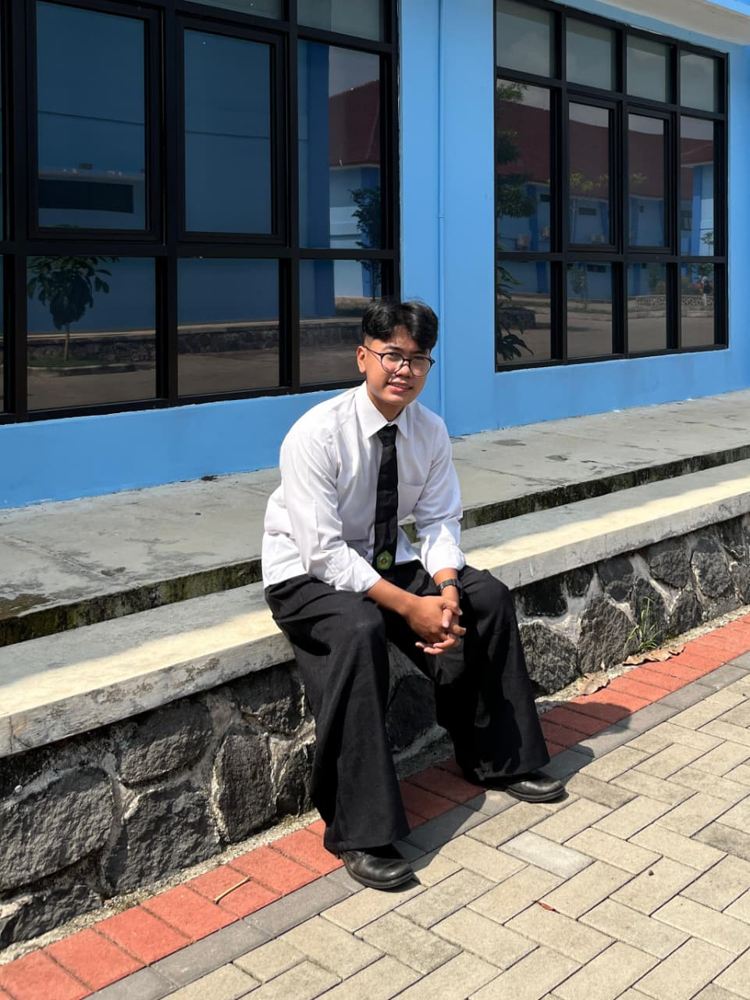

Uzi.
Be Style, Be You
Mahasiswa Teknik dengan ketertarikan mendalam pada teknologi masa depan.
Berfokus pada perpotongan antara Pengembangan Web, Data Science, dan Machine
Learning untuk menciptakan ekosistem digital yang cerdas dan inovatif..
Identitas Diri
Nama: Fauzi Awaludin Kamal
TTL: Ciamis, 31 Oktober 2006
Dusun Bojongsari, Kecamatan Cijeungjing, Kabupaten Ciamis
Dare to be unapologetically you